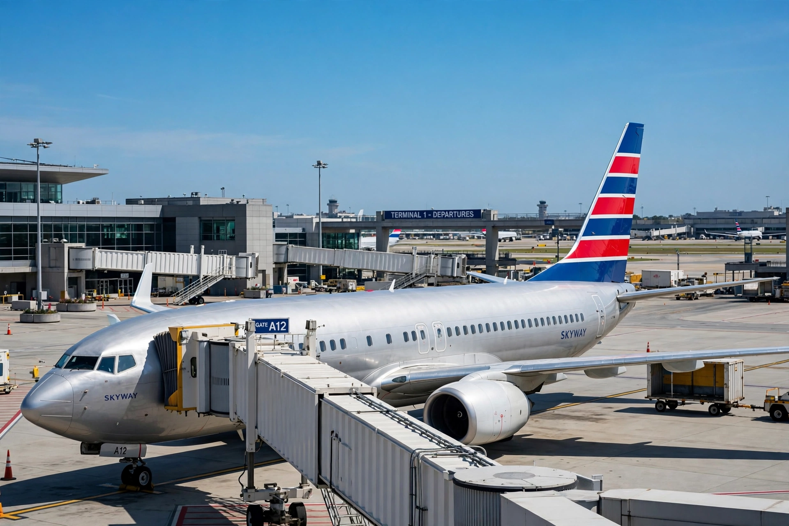

American Airlines
| American Airlines | |
|---|---|
 | |
| An American Airlines widebody at the gate | |
| IATA / ICAO | AA / AAL |
| Founded | April 15, 1926 (as American Airways) |
| Headquarters | Fort Worth, Texas, United States |
| Hubs | Dallas/Fort Worth, Charlotte, Chicago O'Hare, Los Angeles, Miami, New York JFK, Philadelphia, Phoenix, Washington National |
| Alliance | Oneworld |
| Frequent-flyer program | AAdvantage |
American Airlines, Inc. is a major airline in the United States headquartered in Fort Worth, Texas, within the Dallas–Fort Worth metroplex. It is the world's largest airline by scheduled revenue passenger-kilometres carried and by fleet size, and it operates — together with its regional partners under the American Eagle brand — an extensive domestic and international network centred on its nine hubs.
American traces its origins to a 1926 consolidation of small airmail carriers and was a pioneer of commercial aviation: it introduced the Douglas DC-3 into scheduled service in 1936, opened the first airline lounge (the Admirals Club) in 1939, and launched AAdvantage in 1981, widely regarded as the first major frequent-flyer loyalty program. The airline is a founding member of the Oneworld alliance.
Modern history
Parent company AMR Corporation filed for Chapter 11 bankruptcy protection in November 2011. American emerged in December 2013 by merging with US Airways, creating the American Airlines Group and, at the time, the largest airline in the world; the US Airways brand was retired in 2015. The combined carrier maintains major fleets of Airbus A320-family and Boeing 737 narrowbodies, with Boeing 777 and 787 widebodies on long-haul routes.
See also
US Airways · Oneworld · Dallas Fort Worth International Airport